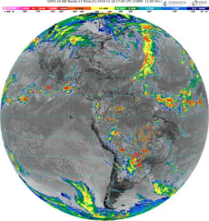
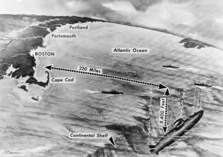
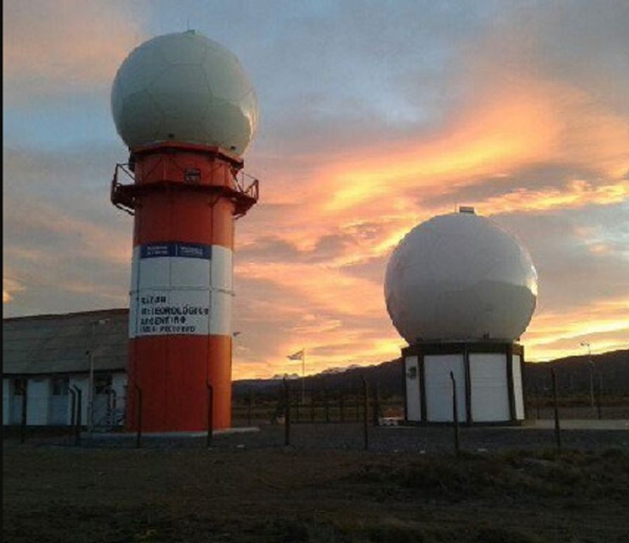
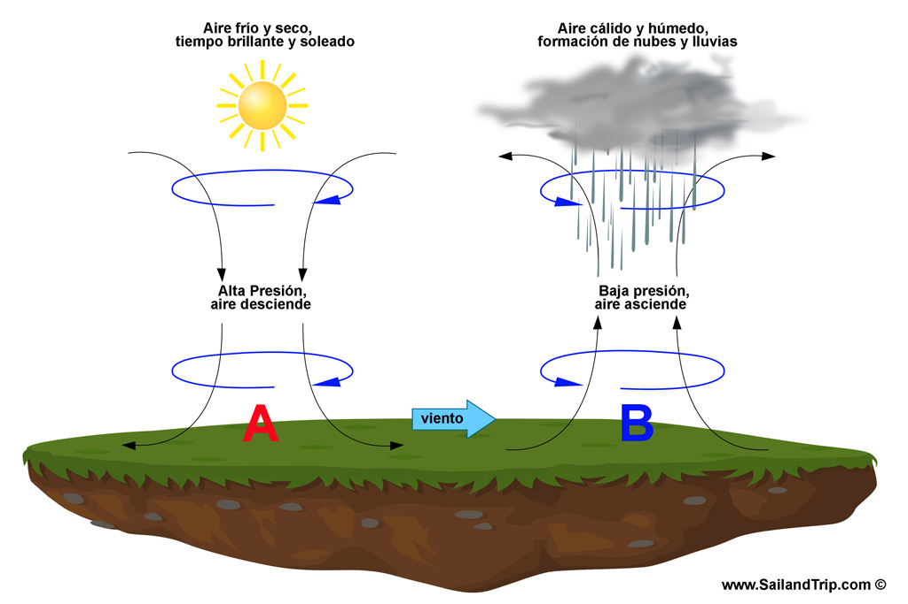
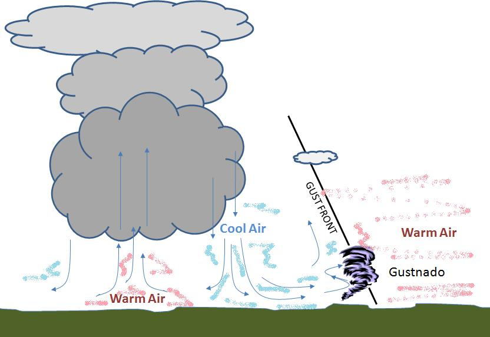

Tipos de Boyas
Principales sistemas utilizados en oceanografía y navegación.
Boyas Salvavidas
Utilizadas para rescate y apoyo en situaciones de emergencia marítima.

Boyas Dart
Detectan variaciones del nivel del mar relacionadas con tsunamis.

Boyas de Señalización
Delimitan zonas seguras para navegación y actividades recreativas.

Boyas de Fondeo
Funcionan como puntos de referencia y guía marítima.

Boyas de Amarre
Diseñadas para asegurar embarcaciones en zonas marítimas.

Boyas para Submarinistas
Ayudan a identificar la ubicación de nadadores y buzos.